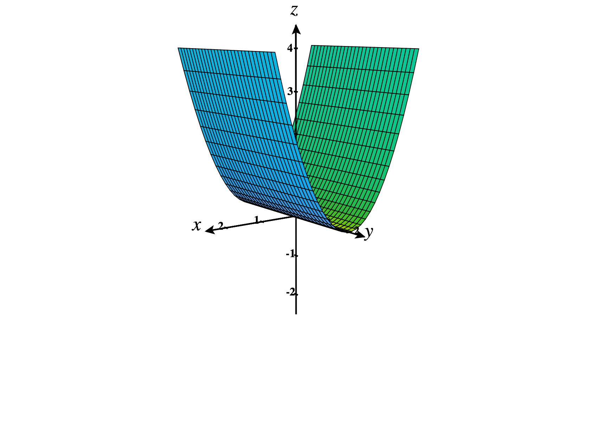
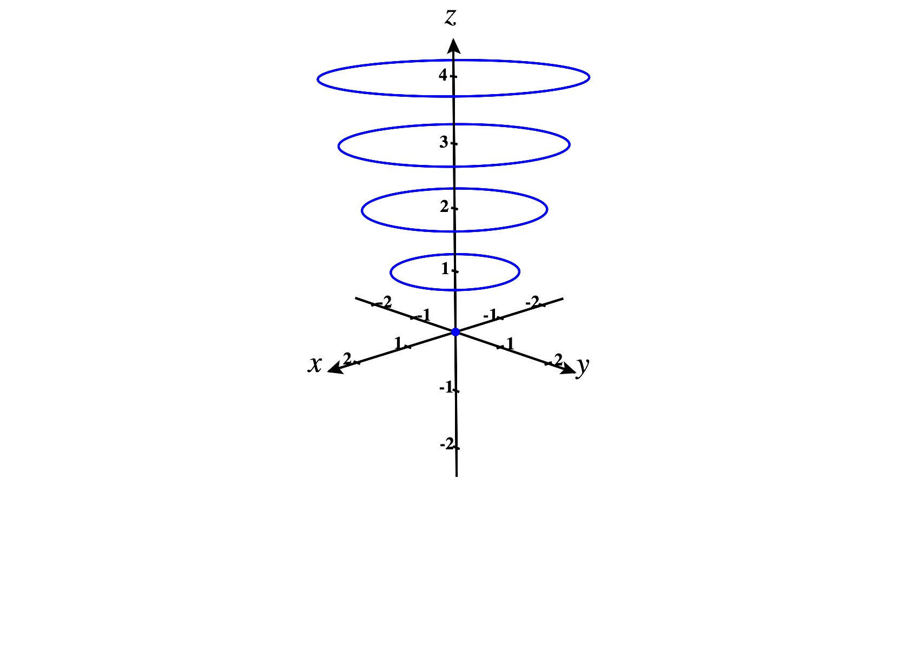
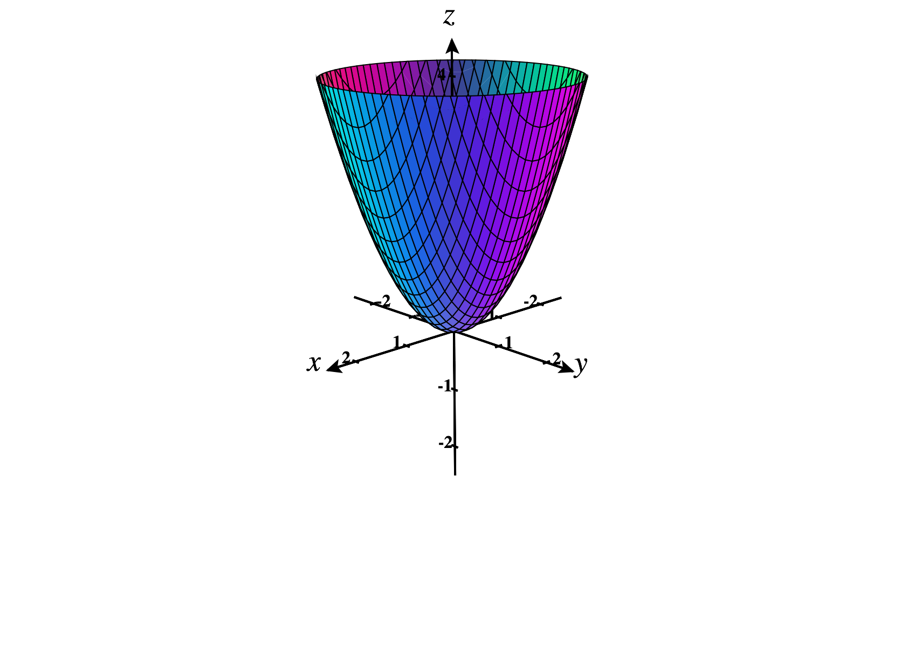
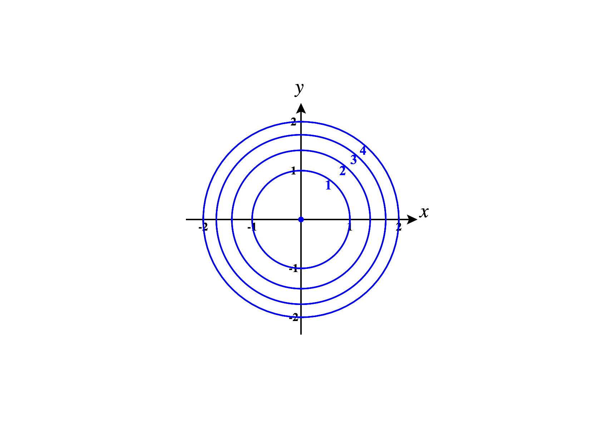
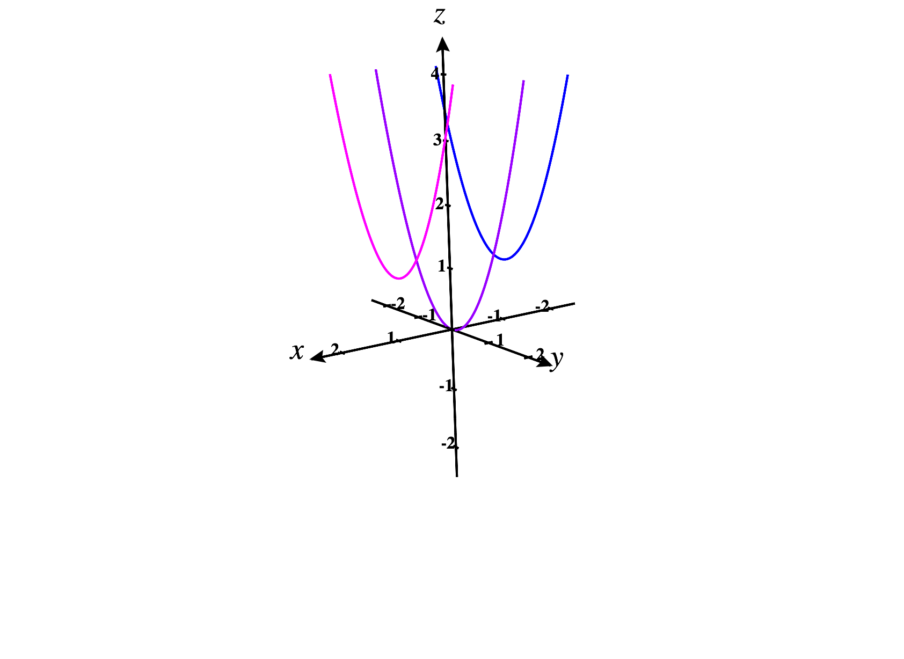
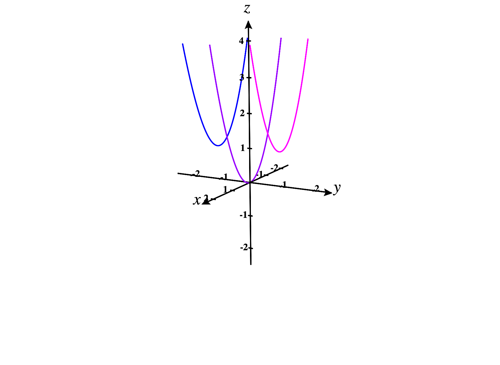
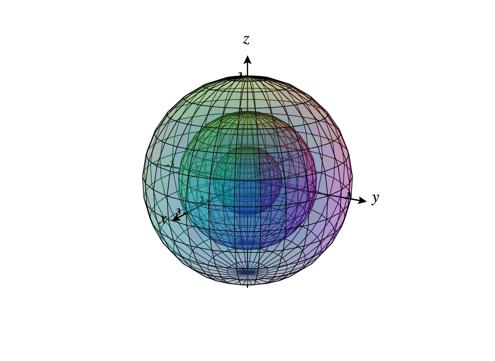

In this section, we’ll cover some approaches for graphing multivariable functions ,
focusing on the case where . Before we define the graph of such a function, let’s think
about how we graph a single variable function.
Consider the function , which is a function . The graph of this function is the set of
all points in the -plane, and we draw this graph below.
We get this set of points by taking each possible input, , with its corresponding
output, . We then plot this point in the -plane. So the graph will include points , and
so on. Notice that for this function, which has domain and codomain , the graph is a
subset of . We’ll keep this in mind as we turn our attention to multivariable
functions.
Definition of the graph of a function
You might already have an intuitive idea of what the graph of a function should be,
but perhaps don’t know the formal definition, or how to figure out what the graph of
an arbitrary function looks like. We’ll begin with the definition of the graph, before
discussing how to actually produce graphs.
Let be a function. The
graph of is the set of points in .
When , we typically visualize a point in the graph as lying over the point in the
plane at a height .
Note that this is similar to the graph of a function from a subset of to : for each
input in , we group it with its output (which is a point in ), to obtain a point in
.
Consider the function defined by . The graph of this function is the following surface
in .

Strategies for graphing
For now, we’ll focus on graphing functions . It can be much trickier to sketch
the graph of such a function than it was to sketch the graphs of functions ,
especially since we’ll often be trying to represent a three-dimensional object in a
two-dimensional image. One common strategy that people will initially try is plotting
individual points to try to get a sense of the graph. However, for graphs in , you
would need a lot of points to get a representative sample of points. For this reason,
plotting points alone is not an effective strategy. However, plotting a single point here
or there can be helpful.
We’ve now told you what doesn’t work for graphing functions in , so now we should
probably figure out what does work. The essential idea of all of these strategies is
that we know you’re pretty comfortable graphing single variable functions in , so
we’re going to take advantage of that experience.
We’ll begin with contour curves, which are obtained by setting the -coordinate to be
constant. Think of this as taking horizontal slices of the graph.
Let be a function. The
contour curve of the function at height is the set of
points in obtained by taking the intersection of the graph of with the plane
.
Consider the function . We’ll find the contour curves of this function at heights , , , , ,
and .
At height , we have the set of points such that . Since squares are always
nonnegative, there are no such points. So, the contour curve at height is the empty
set.
At height , we have the set of points , such that . This only happens when .
So the contour curve at height is just the set consisting of a single point,
.
At height , we have the set of points such that . We can recognize this as a circle of
radius .
At height , we have the set of points such that . We can recognize this as a circle of
radius .
At height , we have the set of points such that . We can recognize this as a circle of
radius .
At height , we have the set of points such that . We can recognize this as a circle of
radius .
We plot all of these contour curves below.

Notice how these give us a sense of the graph of the function, included below.

We can also consider the level curves of a function, which are closely related to
contour curves.
Let be a function. The
level curve of the function at height is the set of points in
satisfying .
After reading this definition, you’re probably thinking “Hey, aren’t contour curves
and level curves the exact same thing?” They’re certainly closely related. The key
difference is that level curves exist in the plane, , while contour curves exist in
three-space, . Since they’re in the plane, level curves are usually easier to draw.
However, contour curves are more useful for figuring out the shape of a graph. For
these reasons, it can be useful to go back and forth between level curves and contour
curves.
Consider the function . We’ll find the level curves of this function at heights , , , , ,
and .
At height , we have the set of points such that . Since squares are always
nonnegative, there are no such points. So, the contour curve at height is the empty
set.
At height , we have the set of points , such that . This only happens when .
So the contour curve at height is just the set consisting of a single point,
.
At height , we have the set of points such that . We can recognize this as a circle of
radius .
At height , we have the set of points such that . We can recognize this as a circle of
radius .
At height , we have the set of points such that . We can recognize this as a circle of
radius .
At height , we have the set of points such that . We can recognize this as a circle of
radius .
We plot all of these level curves below.

Notice that we’ve labeled each level curve with its height, to help us keep track of
how these curves relate to the graph of the function .
We can think of contour curves as taking slices of the graph where is constant. It can
also be useful to take slices of the graph where or is constant. We call these slices
sections of the graph.
Let be a function, and let be a constant.
The section of the graph of by is the set of points
The section of the graph of by is the set of points
Note that, like contour curves, sections exist in .
Consider again the function .
We’ll find the sections by , , and , and by , , and .
For the section by , we have the set of points , where . We can recognize this as a
parabola with vertex .
For the section by , we have the set of points , where . We can recognize this as a
parabola with vertex .
For the section by , we have the set of points , where . We can recognize this as a
parabola with vertex .
We graph these three sections below.

For the section by , we have the set of points , where . We can recognize this as a
parabola with vertex .
For the section by , we have the set of points , where . We can recognize this as a
parabola with vertex .
For the section by , we have the set of points , where . We can recognize this as a
parabola with vertex .
We graph these three sections below.

We’ll graph the equation , by finding the contour curves and sections.
What are the contour curves?
Lines Parabolas Circles Ellipses Hyperbolas
Sketch a few contour curves, to get a sense of how they change with height.
What are the -sections?
Lines Parabolas Circles Ellipses Hyperbolas
What are the -sections?
Lines Parabolas Circles Ellipses Hyperbolas
Piecing the above information together, which of the following is the graph of the
equation ?
Level surfaces
So far, we have focused on graphing functions from subsets of to , so the graphs are
in .
We now turn our attention to the graphs of functions from subsets of to . Note that
the graph of such a function will exist in . Since the world we live in only has three
physical dimensions, it can be very difficult to visualize a four dimensional
object! Fortunately, there are various tricks that can be used to get some
sense of what a four dimensional object looks like. We cover one of them
here.
When we had a function , we could get a sense of the graph by looking at its level
curves, which were curves in the same plane.
For a function , we can adopt a similar approach. We can once again consider the
level sets, which are obtained by taking the output to be some constant: In this case,
the level sets will be level surfaces, which live in . By graphing several level surfaces,
we can see what a slice of the graph of looks like at various heights, giving us
some sense of how the overall graph behaves. Of course, because this graph
exists in four dimensions, we still probably won’t be able to visualize this
perfectly.
To see how this can help us visualize the four-dimensional graph of a function , we
give an example.
Consider the function Find the level surfaces at heights , , , , and . Use these level
surfaces to describe the graph of .
We’ll begin with the level surface at height . This is the set of points in such
that There are no points that satisfy this equation, so the level surface is
empty.
Now we’ll consider the level surface at height . This is the set of points in such that
The only point which satisfies this equation is the origin, so the level “surface” is the
single point .
Let’s look at the level surface at height . This is the set of points in such that
Squaring both sides, we can rewriting this as The graph of this equation is the
sphere of radius centered at the origin, which is our level surface.
Let’s look at the level surface at height . This is the set of points in such that
Squaring both sides, we can rewriting this as The graph of this equation is the
sphere of radius centered at the origin, which is our level surface.
Let’s look at the level surface at height . This is the set of points in such that
Squaring both sides, we can rewriting this as The graph of this equation is the
sphere of radius centered at the origin, which is our level surface.
In the image below, we take advantage of graphing software, and use some
transparency to view these as nested spheres. In many cases, it’s more clear to graph
level surfaces individually. This is especially true if you’re drawing the surfaces by
hand.

We can see that the level surfaces are spheres whose radii increase linearly with the
height. So, we can describe the graph of as some sort of four-dimensional
cone.
Images were generated using CalcPlot3D.